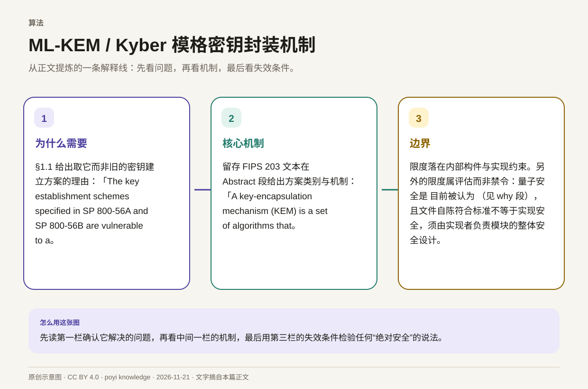
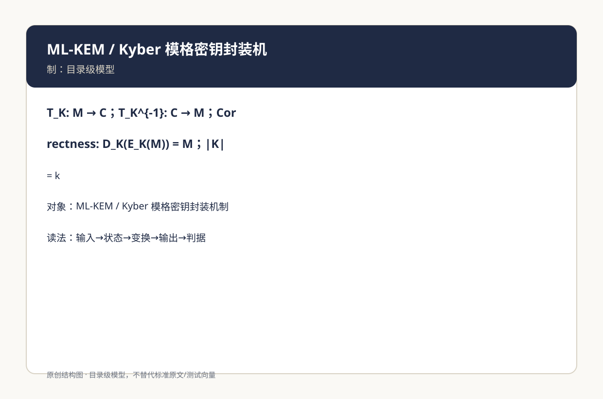

原理与机制
算法：Kyber / ML-KEM 封装机制（Kyber;Module-Lattice-Based Key-Encapsulation Mechanism）。留存 FIPS 203 文本在 Abstract 段给出方案类别与机制：「A key-encapsulation mechanism (KEM) is a set of algorithms that, under certain conditions, can be used by two parties to establish a shared secret key over a public channel.」并点名本标准所规定的具体 KEM：「This standard specifies a key-encapsulation mechanism called ML-KEM.」再给出其安全归约：「The security of ML-KEM is related to the computational difficulty of the Module Learning with Errors problem.」原理即此——ML-KEM 是建立在模格/带错误学习（MLWE）困难性上的密钥封装机制，双方经公开信道封装/解封装得到同一共享密钥。（§3.1 另有一义近乎相同的定义句，该条目据 Abstract 立论。）

为什么重要
§1.1 给出取它而非旧的密钥建立方案的理由：「The key establishment schemes specified in SP 800-56A and SP 800-56B are vulnerable to attacks that use sufficiently-capable quantum computers.」即基于分解与离散对数的既有 KEM/KDF 方案会被足够强的量子计算机所破。Abstract 随即给出 ML-KEM 的定位：「At present, ML-KEM is believed to be secure, even against adversaries who possess a quantum computer.」两句连读是本机制存在的理由——填补离散对数类密钥交换在量子计算下的失效。措辞是 believed（目前被认为），文件亦在 §13 声明每五年正式重估，故此抗量子是当下评估结论而非已证明之事实，该条目不把它拔高为无条件保证。
应用与实例
用途由参数集与安全性档位两面界定。Abstract 列三档参数集：「This standard specifies three parameter sets for ML-KEM.In order of increasing security strength and decreasing performance, these are ML-KEM-512, ML-KEM-768, and ML-KEM-1024.」§3.2 说明其经 FO 变换后达到的攻击模型：「As a result, ML-KEM is believed to satisfy so-called IND-CCA2 security」即选择密文安全（IND-CCA2）。两句合起来是使用面貌：ML-KEM 以 512/768/1024 三档在安全强度与性能间取舍，用作对未授权方保密、面向 CCA2 攻击模型的密钥封装。强度序列是递增/递减的描述性排序，本文件另在别处（§1.1）声明三档均获批保护联邦非涉密通信；措辞仍是 believed，不作证明性断言。

边界与攻击面
限度落在内部构件与实现约束。§3.2 直陈组件不可单独使用：「The scheme K-PKE is not IND-CCA2-secure and shall not be used as a stand-alone scheme (see Section 3.3).」§3.3 再以 shall not 重申：「The public-key encryption scheme K-PKE described in Section 5 shall not be used as a stand-alone cryptographic scheme.」两句是 must 级禁令，把底层明文 PKE（K-PKE）排除于独立使用之外——它只作 ML-KEM 的子程序。另外的限度属评估而非禁令：量子安全是目前被认为（见 why 段），且文件自陈符合标准不等于实现安全，须由实现者负责模块的整体安全设计。该条目据留存文本给出这两类限度，不断言 ML-KEM 已被攻破。
历史与背景
标准与候选的关系在留存文本里写得很直白。§1.1：「ML-KEM is derived from the round-three version of the CRYSTALS-KYBER KEM [4], a submission in the NIST Post-Quantum Cryptography Standardization project.」§1.2 定名：「Throughout this standard, the KEM specified here will be referred to as ML-KEM, as it is based on the Module Learning With Errors assumption.」门面板块（Title block）所印标题为 Module-Lattice-Based Key-Encapsulation Mechanism Standard，并印 Published August 13, 2024 与 Published: August 13, 2024 Effective: August 13, 2024，其免费获取行为 This publication is available free of charge from:（其后 DOI 置于引号外）。目录行仍以候选名 Kyber 指称该算法，而留存文件是已定稿的标准：它把算法称作 ML-KEM，CRYSTALS-KYBER 仅作为其标准化来源出现；两处措辞（Kyber 对 ML-KEM）与文档日期（候选材料 2022 对定稿 2024）的差别即在此记录，该条目据文件所印的 ML-KEM 与 2024-08-13 立论。
逐步示例与核验
形式模型与复算步骤
[(c,k)=\mathrm{Encaps}(pk);\qquad k'=\mathrm{Decaps}(sk,c)]
Kyber / ML-KEM 封装机制的公开参数、密钥/随机数与消息；变量说明：pk 公钥，sk 私钥，c 密文，k 会话密钥。1.封装方采样随机种子并生成密文。2.解封装方用私钥恢复种子。3.双方得到同一会话密钥并校验。边界：公式只覆盖已登记的参数与假设；参数取值、标准版本和实现细节仍以来源为准。
参考出处
- Wikipedia search entry for Kyber / ML-KEM 封装机制. https://zh.wikipedia.org/w/index.php?search=Kyber%20%2F%20ML-KEM%20%E5%B0%81%E8%A3%85%E6%9C%BA%E5%88%B6
- Handbook of Applied Cryptography (Menezes, van Oorschot, Vanstone). https://www.cacr.math.uwaterloo.ca/hac/